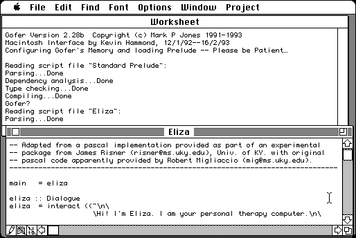

Download
MacGofer-0.22-CD-ROM.zip (1M) MacGofer 0.22d repackaged into a zipped hfs disk image and checksum file. The disk image can be mounted with Mini vMac.
MacGofer-0.22-CD-ROM.sea.hqx.gz (1.1M) MacGofer 0.22d in the original format.
copyright: Mark P. Jones, port by Kevin Hammond
mod date: Apr 8, 1994
license: free for non-commercial use
from url :
Mark P Jones: MacGofer Archive
“Gofer is an extended subset of the lazy functional programming language Haskell”. Source code is included. Credit also goes to Humayan Lari, Matthew Smith, Alex Stewart, and Desmond Yip.

If you find these downloads useful, please consider helping the Gryphel Project, which hosts them.
Here are the md5 checksums for the downloads, signed with Gryphel Key 5:
--------- GRY SIGNED TEXT --------- 34730a93bd6b636790487519f4397a3e MacGofer-0.22-CD-ROM.zip 597a1cd44903b6a5b0664faa541a2f66 MacGofer-0.22-CD-ROM.sea.hqx.gz ------- BEGIN GRY SIGNATURE ------- Gry/4Xa8CFcUzxdN/Pc6JBimp2Qo5Xj+CiSfpHNk1mR+zJ7yqYVSLfvlDPpwxNcO dBNc/hXVN8CXRumupXD1udkmY2JER4ZfkfSDUs7cR7SHaqHg96cDC5ekA7euAbHu 8O3NiVi5u5nEcmnuPKCSyyDfcFkGiE2+YGWUQ4s6uLIUzKjQfgAARjwlWKEgCuSe -------- END GRY SIGNATURE --------